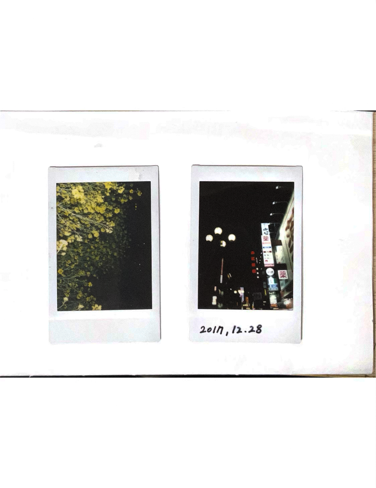
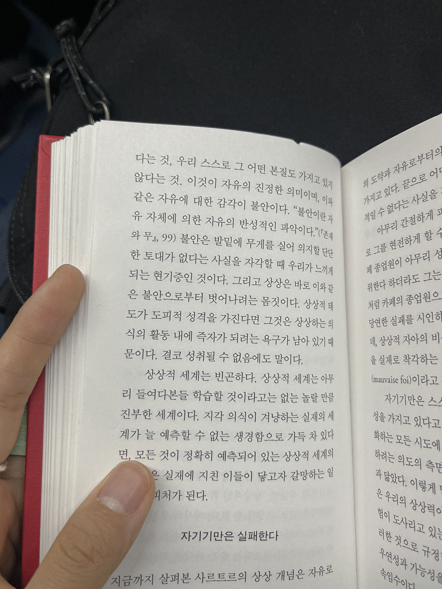
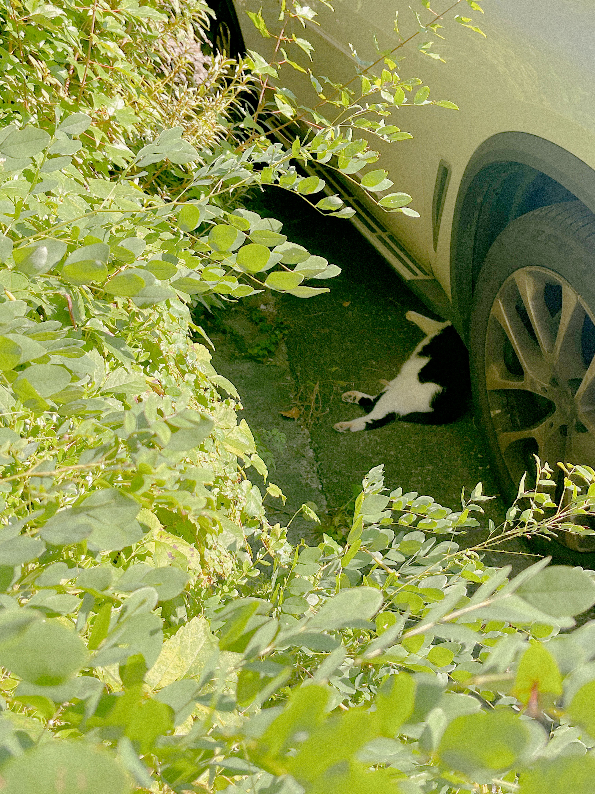
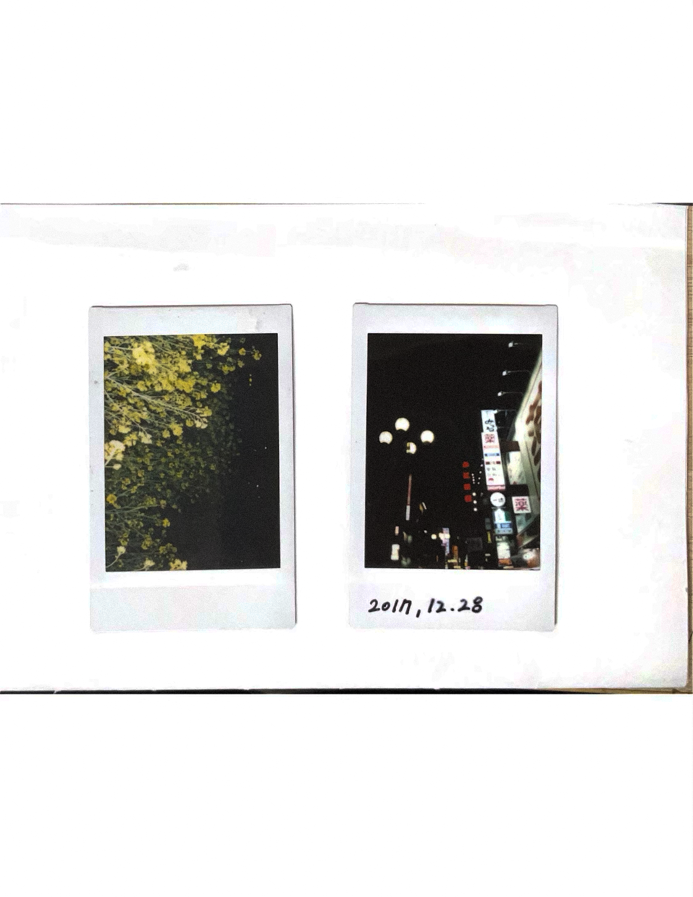
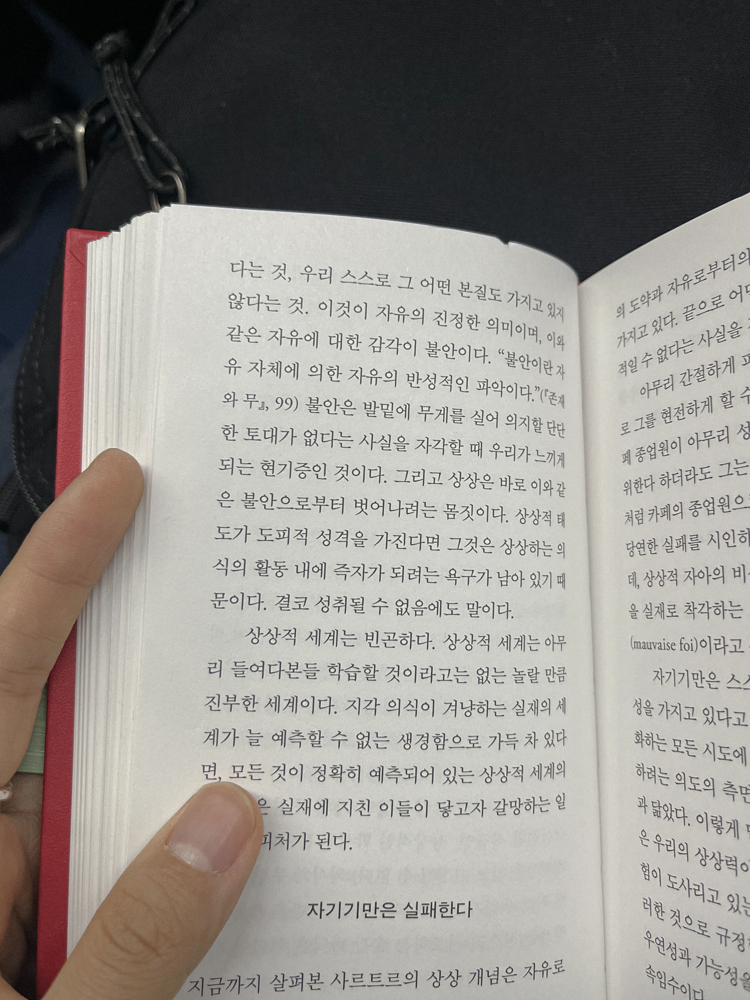
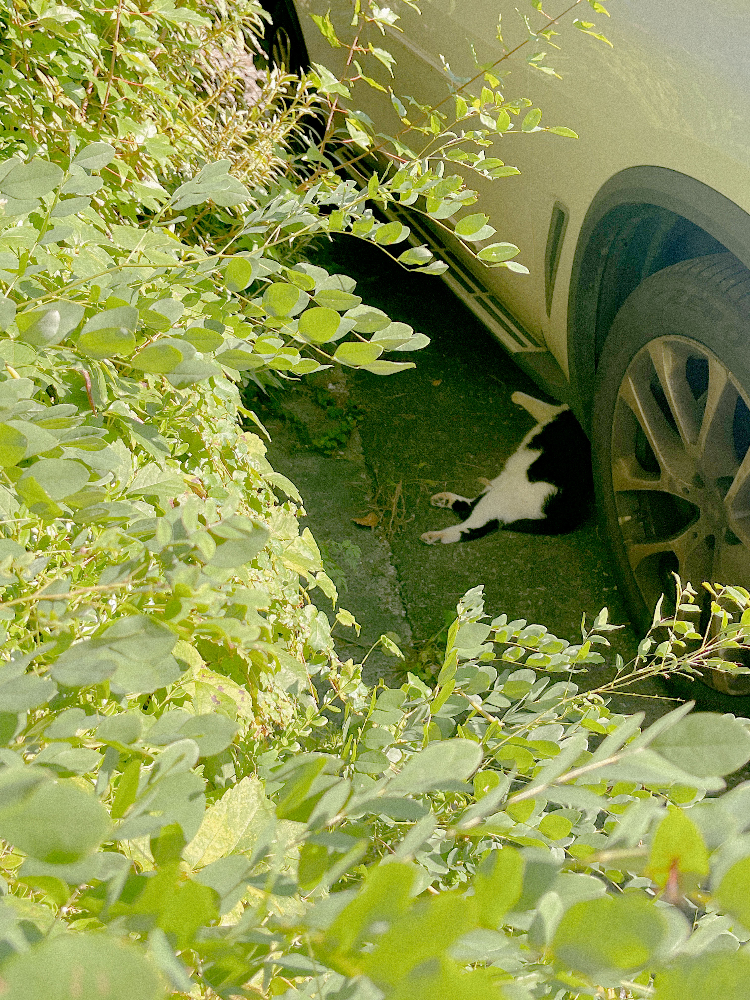
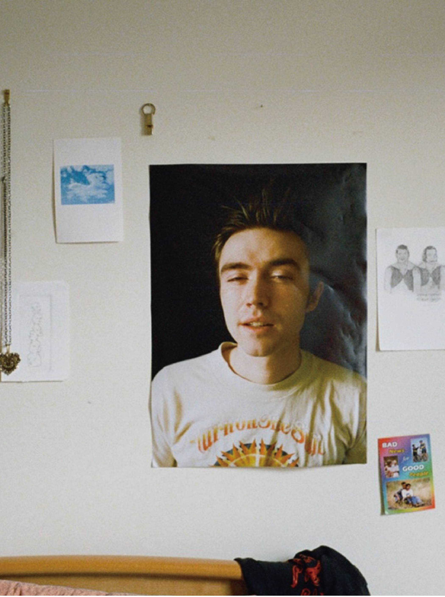
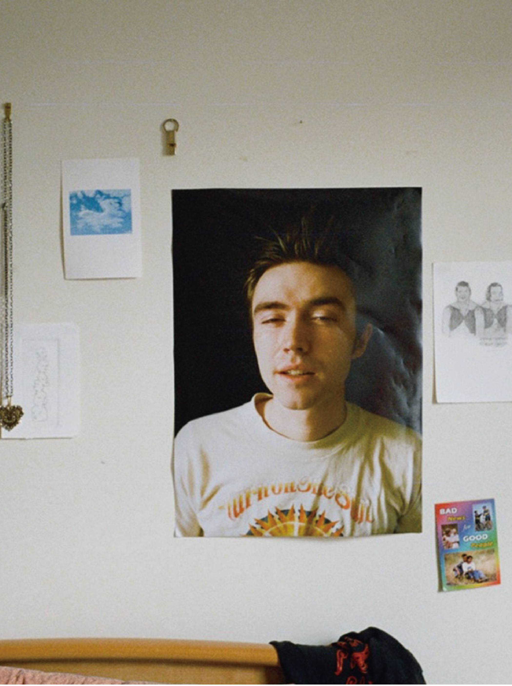

2024
[사랑을 볼 수 있게 해야지!]
54p, link stitch book binding
148 * 210
main graphic..♡｡ﾟ.
scan images..♡｡ﾟ.
used pics..♡｡ﾟ.
동기들과 함께했던 전시를 위해 포스터와 함께 진행했던 편집 디자인 작업입니다.
패턴이라는 대주제에서 저는 사랑의 패턴을 주제로 작업을 했었는데요,
내가 무언가를 사랑할 때 나타나는 신체적, 감정적 변화를 텍스트로 정리하고
해당 텍스트를 그래픽 표현으로 변환한 작업물들입니다.


추상적인 개념인 사랑을 시각화함으로써 두근거릴 수 있는 모든 것을
떠올릴 수 있길 바라며 작업했습니다.
 






 
